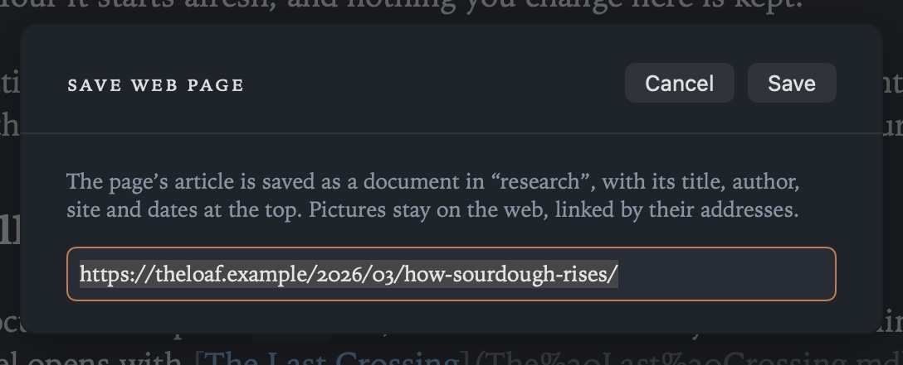

Research
New in 1.3. Web pages you want to keep are documents in your project, the way journal entries are: each one is a page’s article in plain Markdown, with a few lines at the top saying where it came from. They live in one folder, research, so they’re easy to find, link to and search with the rest of your writing.
The research folder
Every project has a research folder, made the first time you save something into it. It’s called research unless you choose another name in Settings ▸ General ▸ Research. A project that already has a Research folder keeps using it.
Saved web pages go there, and so do the PDFs and pictures you save from the web. They’re documents like any other: open them, write notes beneath the article, link to them from your own writing.
Save Web Page
Choose File ▸ Save Web Page, give the page’s address (if you’ve copied one, it’s already filled in) and press Save. Grasmere fetches the page, keeps its article and leaves the rest: menus, adverts, cookie notices, sharing buttons, comments and scripts. The article becomes Markdown: its headings, paragraphs, lists, quotations, code and tables, with links and pictures pointing at their places on the web. The new document opens straight away, named after the page’s title.

- A page saved before isn’t saved twice: Grasmere offers to open the document you already have.
- A page that can’t be fetched, or one with no article to read (a home page, a sign-in form), is explained in the sheet, with the choice to save the link on its own: a document with the address and what the page says about itself, to read later.
- New Document from Clipboard (⇧⌘K) with a web address on the clipboard does the same, without typing anything.
Grasmere fetches only the page you asked for, as Safari would but with no cookies and nothing signed in, so pages behind a login or a paywall save as far as they show to anyone. Pictures aren’t downloaded: they stay on the web, linked by their addresses.
What’s at the top
Each saved page starts with front matter, the fields between the --- lines. You can see and edit them in the margin’s Front Matter section.
---
title: How Sourdough Rises
url: https://theloaf.example/2026/03/how-sourdough-rises/
author: Rosa Field
site: The Loaf
published: 2026-03-14
accessed: 2026-10-23
type: webpage
---
- title: the page’s own title, also the document’s heading.
- url: the page’s address, so you can go back to it, and how Grasmere knows it’s saved already.
- author and published: when the page says who wrote it and when.
- site: the website’s name, or its address when it doesn’t give one.
- accessed: the day you saved it, the date a citation asks for.
- type: webpage: marks it as a saved page, and makes it a source you can cite.
The fields are the ones citation styles use, so a saved page is ready to cite: type [@ in a document and choose it. New in 1.3: File ▸ New Source makes a source from a book’s ISBN or a paper’s DOI, or a blank one to fill in, and Grasmere keeps a table of the folder’s sources in research.md. See Citations.
From other apps
- The Share menu: in Safari, choose Share ▸ Grasmere and pick a project. The page is saved into that project’s research folder in the same way, with your comment under its title. See Quick Capture and Sharing.
- Shortcuts: the Save Web Page action takes an address (and, if you like, a project) and returns the new document’s file, or the one you saved before. A page with no article is saved as its link. See Shortcuts and the Command Line.
Settings
- Settings ▸ General ▸ Research ▸ Folder names the research folder (
researchby default). - Saved pages are often other people’s writing, so websites you build leave the research folder out unless you turn on Publish the research folder in Settings ▸ Automation. See Publishing.
Related
- Citations
- Journal
- Quick Capture and Sharing
- Privacy, for what Grasmere fetches from the web